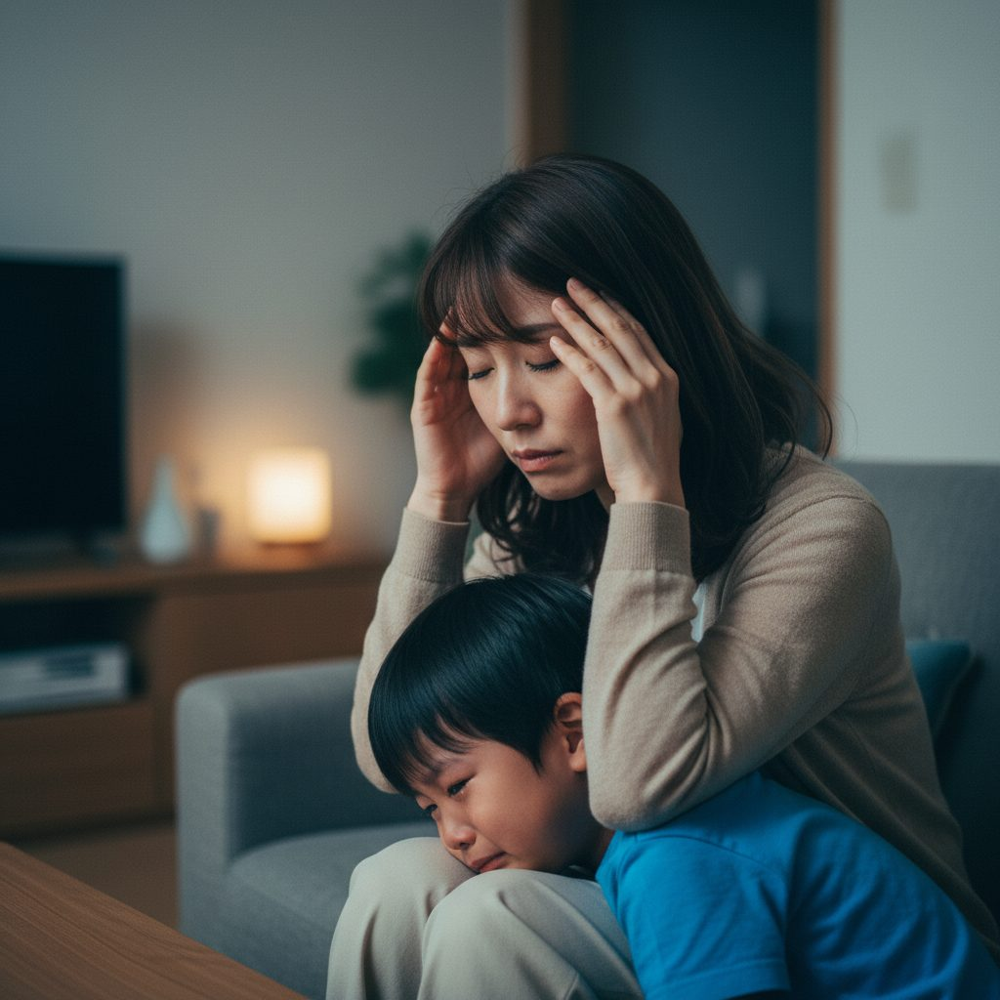
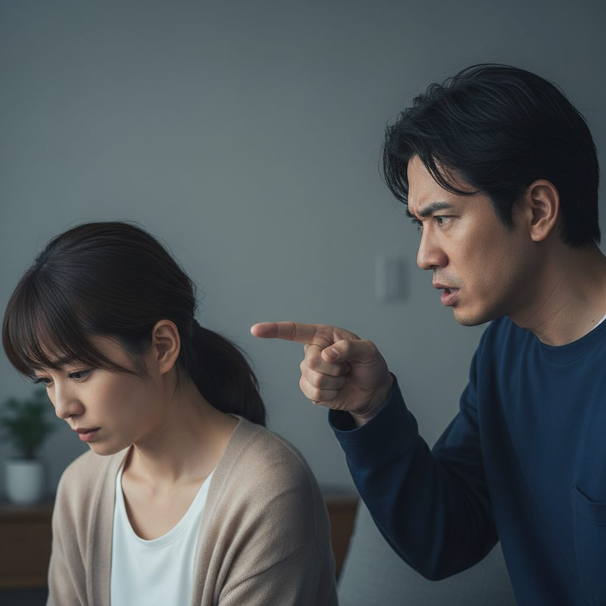
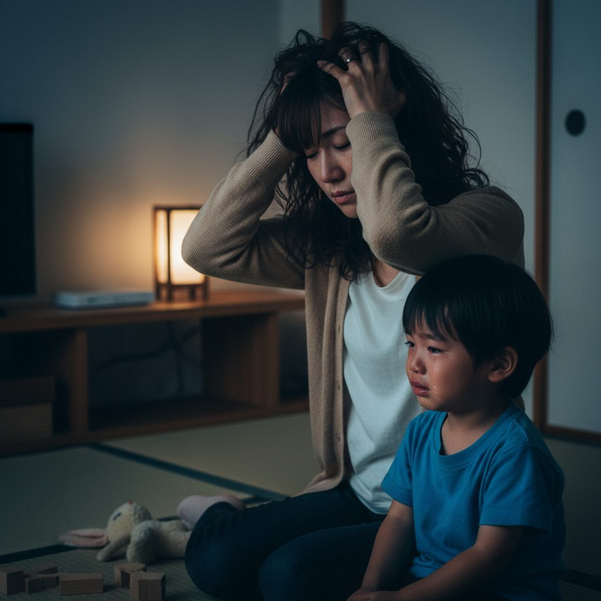
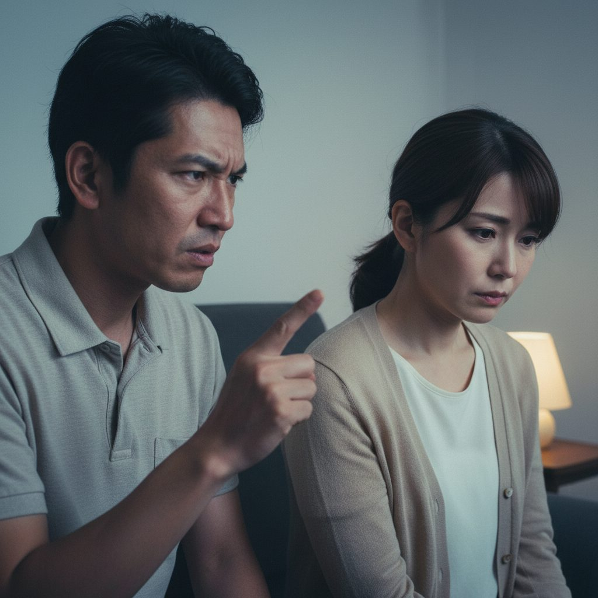
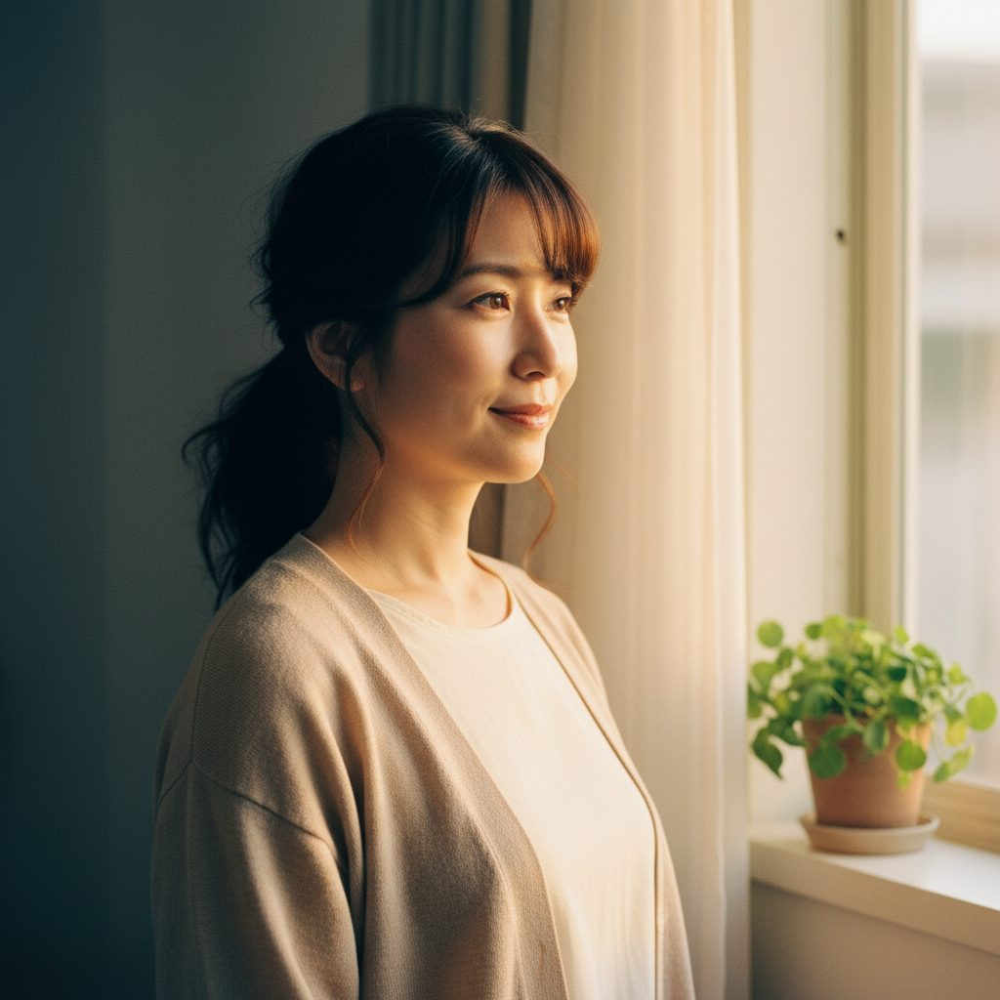
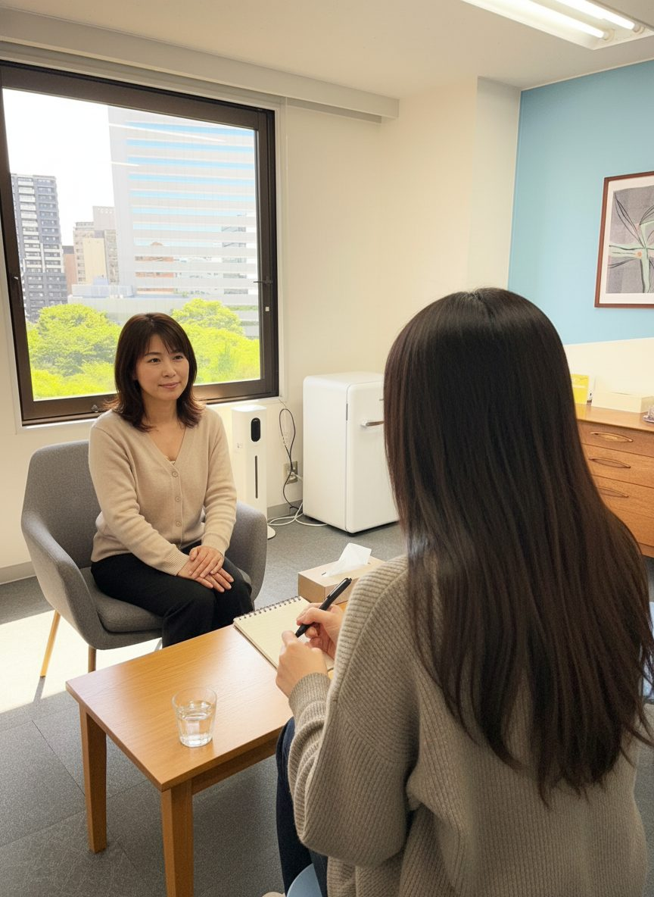
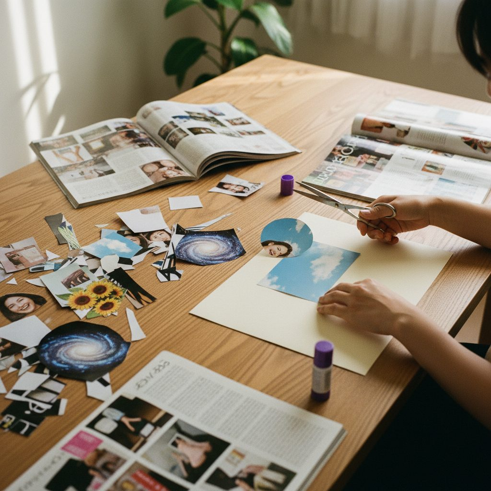
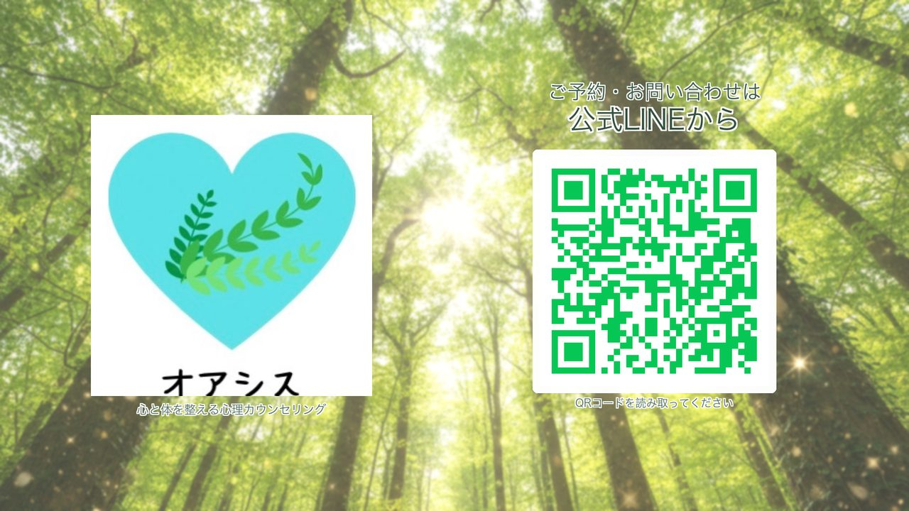

RUNBIRD AI VIDEO — STORYBOARD v5（実写風強化＋順序入替版）
仙台オアシスカウンセリングルーム
代表：家山 めぐみ（臨床心理士・公認心理師） ／ 業種：女性専用 心理カウンセリング ／ 動画尺：50秒（YouTube広告）
主役：30代後半の親しみある美人ママ（家山様ご指定「泉里香様風」／特定個人を模倣しないAIオリジナル顔）＋ 4歳くらいの男の子
悩みシーン：① 子育てに疲れて頭を抱えるママ ＋ ② 夫から眉間に皺で説教される妻（萎縮）の2点に絞る（スプシ「動画の主役」欄＋5/19返信に準拠）
テイスト：緑基調・実写風（フォトリアル）・静止画・ゆっくり展開・フェリシテ系の癒し系BGM
構成：「人が先ではない」（5/19返信）に従い、シーン1は無人の緑のオアシス（フェリシテ的入り）から始めます
悩みシーン：① 子育てに疲れて頭を抱えるママ ＋ ② 夫から眉間に皺で説教される妻（萎縮）の2点に絞る（スプシ「動画の主役」欄＋5/19返信に準拠）
テイスト：緑基調・実写風（フォトリアル）・静止画・ゆっくり展開・フェリシテ系の癒し系BGM
構成：「人が先ではない」（5/19返信）に従い、シーン1は無人の緑のオアシス（フェリシテ的入り）から始めます
女性専用
オンライン全国対応
夜間・土日OK
対面：仙台駅近く
臨床心理士・公認心理師
🎥参考イメージ（家山様ご指定）
★ 池袋カウンセリングルーム フェリシテ（公式サイト）
家山様が「このイメージで」とご指定の同業サイト。サイト全体の落ち着いた色味・余白・トーンを本案件の基本骨格として採用。
⚠️ ご確認：5/19返信で「フェリシテの動画のイメージ」とのご指示でしたが、フェリシテ公式サイト上には動画が見当たりませんでした。佐久間に別途お送りいただいた動画URL/ファイルがあれば、ぜひ再共有ください。
↗ サイトを開く
⚠️ ご確認：5/19返信で「フェリシテの動画のイメージ」とのご指示でしたが、フェリシテ公式サイト上には動画が見当たりませんでした。佐久間に別途お送りいただいた動画URL/ファイルがあれば、ぜひ再共有ください。

AC JAPAN「家族の形が変わっても」30秒
30秒尺で家族の感情を静かに描く王道型。落ち着いた色味・ピアノBGM・最後の言葉で泣かせる構造。当案件のCTA前の余韻設計に流用。
▶ YouTubeで開く
🟡今回モックで仮置きさせていただいた点
録音・ヒアリングシートに記載がなかったため、業態的に最適と思われる選択で仮置きしています。違うご希望があればご返信内でお知らせください。v5でそのまま反映します。
- ナレーター声：落ち着いた40代女性ナレーション（穏やかな低めの声）
- フックの優先順位：案A（子育てママ）をメインに、案B（夫モラハラ）を差し替え運用候補
- 料金体系の動画内表記：なし（料金は動画外導線で）
- テロップ言語：日本語のみ（英語併記なし）
- 動画末尾の余韻：緑のオアシスの静止画＋LINE/HPロゴ淡出（3秒）
🧠動画構成の根拠（スプシ・録音・5/19返信のクロス参照）
家山様の指示を全て出典付きで反映しています
- 2悩みシーン（子育てママ＋夫モラハラ） ← スプシ「動画の主役」欄に最初から明示 ＋ 5/19返信で確認
- コラージュ・絵画療法（箱庭は実施なし） ← スプシ「コラージュ療法など芸術療法」＋ 5/19返信で訂正
- 4歳くらいの男の子（泣いている） ← 5/19返信で年齢指定
- 主役は泉里香様の雰囲気で生成 ← 5/19返信のご指示。参考写真2枚をAI画像入力に渡して雰囲気・髪型・笑顔の印象を反映
- 代表者の動画出演なし・肩から下のみ ← 5/19返信で確定
- 静止画・ゆっくり展開・癒し系BGM ← 5/19返信「鬱な人がみてもうるさくないように」
- 参考イメージ＝フェリシテ ← スプシ参考動画URL欄に最初から記載 ＋ 5/19返信
- オンラインメインターゲット＋オンラインシーン ← 録音32:30 ＋ 5/19返信
- CTA：公式LINEとHP ← 5/19返信で確定
🎯フック案バリエ（2案・A/B運用）

案A（子育てママ＋泣く4歳児）
「実は一人で、悩みを抱えていませんか？」
スプシ「動画の主役」欄ど真ん中の構図。子育てママ層への共感を一発で。

案B（夫モラハラ・妻萎縮）
「あなたの言葉にならない思いも、受け止めます。」
夫から眉間に皺で説教される妻が萎縮。モラハラ被害者層への直撃。
📋案件概要
📽シーン構成（全10シーン・45秒）
SCENE 01 ／ 0–6s ／ HOOK（空間から入る・人は出さない）
「実は一人で、ずっと悩みを抱えていませんか？」
（穏やかに）…一人で、抱え込んでいませんか。

SCENE 02 ／ 6–13s ／ PROBLEM 子育てママ
「何をやってもうまくいかない、もやもや感。」
何をやってもうまくいかない、もやもや感、しんどさ。

SCENE 03 ／ 13–19s ／ PROBLEM 夫婦モラハラ
「あなたの言葉にならない思いも、受け止めます。」
アイデンティティの混乱、生きづらさ、モラハラ。

SCENE 04 ／ 19–24s ／ AFFINITY（転換点）
（間）
（間）あなたの言葉にならない思いも、受け止めます。

SCENE 05 ／ 24–29s ／ SOLUTION（屋号登場）
仙台オアシスカウンセリングルーム
仙台オアシスカウンセリングルーム。

SCENE 06 ／ 29–37s ／ USP① 的確なアセスメント＋丁寧な傾聴
的確なアセスメント／丁寧な傾聴
臨床心理士・公認心理師が、お気持ちを受けとめながらお話をお聴きします。

SCENE 07 ／ 37–43s ／ USP② コラージュ・絵画療法
言葉にならない思いを、形に
言葉になかなかできない時も、コラージュ・絵画療法も行っております。

SCENE 08 ／ 43–47s ／ USP③ オンラインメイン
オンライン｜夜間・土日対応／全国
オンライン、夜間も土日も。あなたのペースで。

SCENE 09 ／ 47–50s ／ CTA
まずは、公式LINEへ／HPはこちら
まずはお気軽に、公式LINEからご相談ください。
🎙ナレーション全文
実は一人でずっと、悩みを抱えていませんか。 何をやってもうまくいかない、もやもや感、しんどさ。 あなたの言葉にならない思いも、受け止めます。 —— 仙台オアシスカウンセリングルーム。 思春期問題や夫婦・親子関係、対人援助職のご相談など、 女性の相談に携わってきた、臨床心理士・公認心理師の資格を持つカウンセラーが、 お気持ちを受けとめながら、お話をお聴きします。 言葉になかなかできない時も、コラージュ・絵画療法（芸術療法）も行っております。 オンライン、夜間も土日も。 まずはお気軽に、公式LINEからご相談ください。
※ 約200字 ／ 想定発声 38〜42秒 ／ ナレーター = 落ち着いた40代女性声（仮置き） ／ 動画尺50秒
⚠️演出のキモ ＋ NG・審査対策
◎ 演出のキモ
- HOOK 3秒で「女性／悩み／夜」を一発で伝える
- シーン4で必ず「光が差し込む」転換カットを置く
- カウンセラーの顔は正面で見せすぎず、後ろ姿越し傾聴で感情移入
- 芸術療法は手元クローズアップで「ただ話すだけじゃない」差別化
- CTAは LINE一本に絞る（HP/Mapは小さく添える）
⚠ NG・YouTube広告審査対策
- 「治る」「治療」「改善する」は使わない → 「整える」「向き合う」「寄り添う」
- 疾患名（鬱・パニック・PTSD等）はテロップで断定しない
- 夫役の男性はシルエット／後ろ姿／ピンボケ前景に限定（顔の特定回避）
- アニメ・イラスト調NG（実写風で統一）
- 子供のアップ・泣き顔は避ける（広告審査の児童保護）
✅家山様にご確認いただきたいこと
- ① 主役の顔の方向性 — 「泉里香様風」を反映し、特定個人を模倣しないAIオリジナル顔で作成しました。もう少し寄せる／離す方向はございますか
- ② 4歳男の子の見え方 — 顔を強く見せない（横顔／後ろ姿）構成にしました。これでよろしいか
- ③ 夫のシーンの見せ方 — 眉間に皺で説教する3/4ビューにしました。シルエットに弱める方が良いか
- ④ カウンセラーの肩から下のみ構成 — 家山様ご指定で顔出しなし。室内の実写写真をいただいた後、合成のクオリティを上げます
- ⑤ 公式LINE QRコード／HP URL（CTA画面に貼る用）
- ⑥ ナレーター候補は落ち着いた40代女性声で仮置き。性別・年齢の希望はございますか
- ⑦ フック運用：案A（子育てママ）をメインで仮置き。案B（夫モラハラ）に入れ替え可
- ⑧ フェリシテの「動画」のURL／ファイルを再共有ください — 公式サイト felicite-c.com 上には動画が見当たらなかったため。佐久間に別途お送りいただいたものを再度ご共有いただけると、トーンを一段寄せられます
- ⑨ コラージュ作品のサンプル写真ご提供時期（来談者持参とのことで作例があれば）
- ⑨ 対人援助職向けコンサルテーションを動画に含めるか／別動画化するか
- ⑩ 料金体系の動画内テロップ表記 — 仮置きでは動画内に料金表記なしにしています